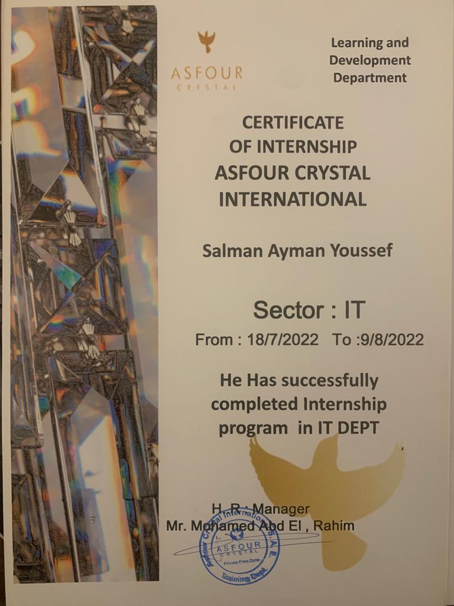

Salman Ayman Youssef · Documents originaux
Asfour Crystal — Certificat de stage informatique
Certificat original attestant le stage de Salman au service informatique d’Asfour Crystal International du 18 juillet au 9 août 2022.

Salman Ayman Youssef · Documents originaux
Certificat original attestant le stage de Salman au service informatique d’Asfour Crystal International du 18 juillet au 9 août 2022.
